DEVELOPED BY ROBERT ZULU THE PROFESSIONAL PROGRAMMER
THE ELECTROMAGNETIC SPECTRUM
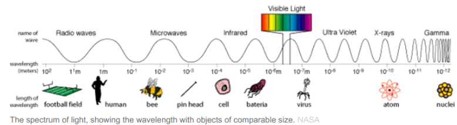Radio wave, Microwave, Infra-Red, Visible Light, Ultra-Violet, X-Rays, Gamma Rays
All of these are "electromagnetic waves". This means that although they appear to be very different, in fact they're all made of the same kind of vibrations - but at different .
All electromagnetic waves travel at the same speed - 300,000,000 metres per second, which is the speed of light.
What does "frequency" mean? The frequency of a wave is the number of waves per second.
What does"wavelength" mean? The wavelength is the distance from the peak of one wave to the next one.
GAMMA RAYS
How they are made: Gamma rays are given off by stars, and by some radioactive substances. They are extremely high frequency waves, and carry a large amount of energy. They pass through most materials, and are quite difficult to stop - you need lead or concrete in order to block them out.
Uses: Because Gamma rays can kill living cells, they are used to kill cancer cells without having to resort to difficult surgery. This is called "Radiotherapy", and works because cancer cells can't repair themselves like healthy cells can when damaged by gamma rays. Getting the dose right is very important!
Doctors can put slightly radioactive substances into a patient's body, then scan them to detect the gamma rays and build up a picture of what's going on inside the patient. These are called "tracers". This is very useful because they can see the body processes actually working, rather than just looking at still pictures.
In industry, radioactive "tracer" substances can be put into pipes and machinery, then we can detect where the substances go. This is basically the same use as in medicine. Gamma rays kill microbes, and are used to sterilize food so that it will keep fresh for longer. This is known as "irradiated" food. Gamma rays are also used to sterilize medical equipment.
Dangers: Gamma rays cause cell damage and can cause a variety of cancers. They cause mutations in growing tissues, so unborn babies are especially vulnerable.
X-RAYS
How they are made: X-rays are very high frequency waves, and carry a lot of energy. They will pass through most substances, and this makes them useful in medicine and industry to see inside things. X-rays are given off by stars, and strongly by some types of nebula. When we use X-rays, we make them by firing a beam of electrons at a "target". If we fire the electrons with enough energy, X-rays will be produced. 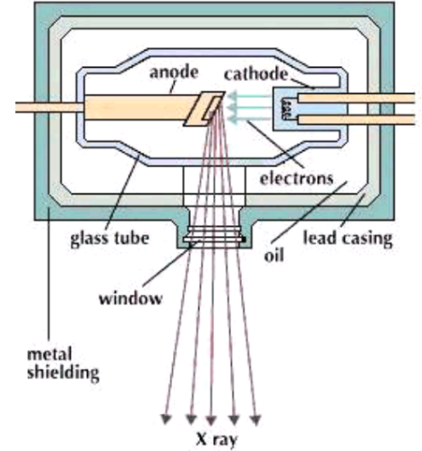 Uses: X-rays are used by doctors to see inside people. They pass easily through soft tissues, but not so easily through bones. We send a beam of X-Rays through the patient and onto a piece of film, which goes dark where X-Rays hit it. This leaves white patches on the film where the bones were in the way. Lower energy X-Rays don't pass through tissues as easily, and can be used to scan soft areas such as the brain 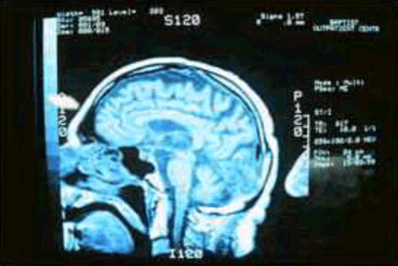 Sometimes a doctor will give a patient a "Barium Meal", which is a drink of Barium Sulphate. This will absorb X-rays, and so the patient's intestines will show up clearly on a X-Ray image. Uses: X-rays are used by doctors to see inside people. They pass easily through soft tissues, but not so easily through bones. We send a beam of X-Rays through the patient and onto a piece of film, which goes dark where X-Rays hit it. This leaves white patches on the film where the bones were in the way. Lower energy X-Rays don't pass through tissues as easily, and can be used to scan soft areas such as the brain X-Rays are also used in airport security checks, to see inside your luggage. They are also used by astronomers - many objects in the universe emit X-rays, which we can detect using suitable radio telescopes. Dangers: X-Rays can cause cell damage and cancers. This is why Radiographers in hospitals stand behind a shield when they X-ray their patients. Although the dose is not enough to put the patient at risk, they take many images each day and could quickly build up a dangerous dose themselves
ULTRA-VIOLET
How they are made: Ultra-Violet light is made by special lamps, for example, on sun beds. It is also given off by the Sun in large quantities. We call it "UV" for short.
Uses for UV light include getting a sun tan, detecting forged bank notes in shops, and hardening some types of dental filling. You also see UV lamps in discos, where they make your clothes glow. This happens because substances in washing powder "fluoresce" when UV light strikes them. When you mark your posessions with a security marker pen, the ink is invisible unless you shine a UV lamp at it.
Ultraviolet rays can be used to kill microbes. Hospitals use UV lamps to sterilise surgical equipment and the air in operating theatres. Food and drug companies also use UV lamps to sterilise their products Suitable doses of Ultraviolet rays cause the body to produce vitamin D, and this is used by doctors to treat vitamin D deficiency and some skin disorders.
Dangers: Large doses of UV can damage the retinas in your eyes, so it's important to check that your sunglasses will block UV light. The cheaper sunglasses tend not to protect you against UV, and this can be really dangerous. When you wear sunglasses the pupils of your eye get bigger, because less light reaches them. This means that if your sunglasses don't block UV, you'll actually get more ultra-violet light on your retinas than if you didn't wear them. Large doses of UV cause sunburn and even skin cancer. Fortunately, the ozone layer in the Earth's atmosphere screens us from most of the UV given off by the Sun. Think of a sun tan as a radiation burn!
VISIBLE LIGHT
How it is made: Our eyes can detect only a tiny part of the electromagnetic spectrum, called visible light. This means that there's a great deal happening around us that we're simply not aware of, unless we have instruments to detect it.
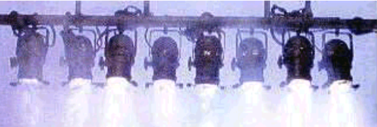
Light waves are given off by anything that's hot enough to glow. This is how light bulbs work - an electric current heats the lamp filament to around 3,000 degrees, and it glows white-hot. The surface of the Sun is around 5,600 degrees, and it gives off a great deal of light.
White light is actually made up of a whole range of colors, mixed together. We can see this if we pass white light through a glass prism - the violet light is bent ("refracted") more than the red, because it has a shorter wavelength - and we see a rainbow of colors.
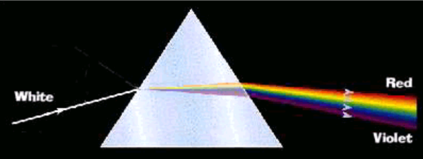
Uses: We use light to see things! As the Sun sends so much light towards our planet, we've evolved to make use of those particular wavelengths in order to sense our environment. Light waves can also be made using a laser. This works differently to a light bulb, and produces "coherent" light. Lasers are used in Compact Disc players, where the light is reflected from the tiny pits in the disc, and the pattern is detected and translated into sound or data. Lasers are also used in laser printers, and in aircraft weapon aiming systems.
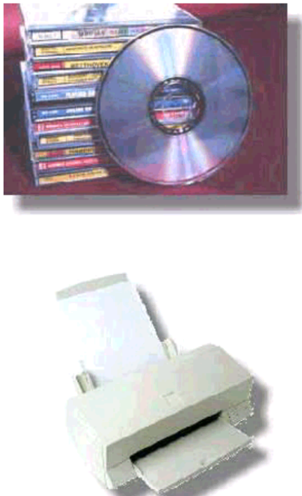
Dangers: Too much light can damage the retina in your eye. This can happen when you look at something very bright, such as the Sun. Although the damage can heal, if it's is too bad it'll be permanent.
INFRA-RED
How they are made: Infra-red waves are just below visible red light in the electromagnetic spectrum ("Infra" means "below").
You probably think of Infra-red waves as heat, because they're given off by hot objects, and you can feel them as warmth on your skin. Infra-Red waves are also given off by stars, lamps, flames and anything else that's warm - including you.
Uses: Infra-red waves are called "IR" for short. They are used for many tasks, for example, remote controls for TVs and video recorders,
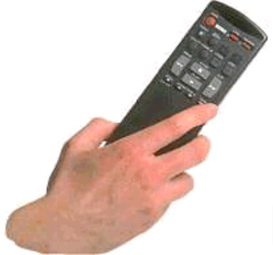 and physiotherapists use heat lamps to help heal sports injuries. Because every object gives off IR waves, we can use them to "see in the dark". Night sights for weapons sometimes use a sensitive IR detector (other types, called "image intensifiers", use visible light). Remember the film, "Predator"? Apart from remote controls, one of the most common modern uses for IR is in the field of security. "Passive Infra-Red" (PIR) detectors are used in burglar alarm systems, and to control the security lighting that many people have fitted outside their houses. These detect the Infra-Red emitted by people and animals. You've probably seen TV programmes in which police helicopters track criminals at night, using cameras which can see in the dark. These cameras use Infra-Red waves instead of "ordinary" light, which is why people look bright in these pictures.
Weather forecasters use satellite pictures to see what's heading our way. Some of the images they use are taken using IR cameras, because they show cloud and rain patterns more clearly.
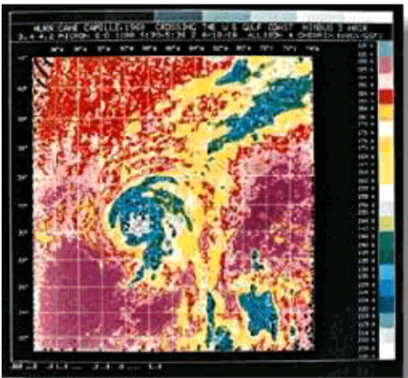
Dangers: The danger from too much Infra-Red radiation is very simple - it makes you hot.
MICROWAVE
How they are made: Microwaves are basically extremely high frequency radio waves, and are made by various types of transmitter. In a mobile phone, they're made by a transmitter chip and an antenna, in a microwave oven they're made by a "magnetron". Their wavelength is usually a couple of centimetres. Stars also give off microwaves.
Microwaves cause water and fat molecules to vibrate, which makes the substances hot. Thus we can use microwaves to cook many types of food.
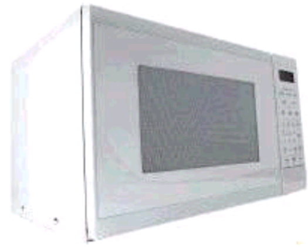
Mobile phones use microwaves, as they can be generated by a small antenna, which means that the phone doesn't need to be very big. The drawback is that, being small, they can't put out much power, and they also need a line of sight to the transmitter. This means that mobile phone companies need to have many transmitter towers if they're going to attract customers.
Microwaves are also used by traffic speed cameras, and for radar, which is used by aircraft, ships and weather forcasters. The most common type of radar works by sending out bursts of microwaves, detecting the "echoes" coming back from the objects they hit, and using the time it takes for the echoes to come back to work out how far away the object is.
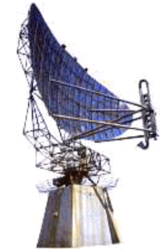
Dangers: Prolonged exposure to microwaves is known to cause "cataracts" in your eyes, which is a clouding of the cornea. So don't make a habit of pressing your face against the microwave oven door to see if your food's ready! Recent research indicates that microwaves from mobile phones can affect parts of your brain - after all, you're holding the transmitter right by your head. The current advice is to keep calls short. People who work on aircraft carrier decks wear special suits which reflect microwaves, to avoid being "cooked" by the powerful radar units in modern military planes.
RADIO WAVES
How they are made: Radio waves are made by various types of transmitter, depending on the wavelength. They are also given off by stars, sparks and lightning, which is why you hear interference on your radio in a thunderstorm.
Uses: Radio waves are the lowest frequencies in the electromagnetic spectrum, and are used mainly for communications. They are divided into:

1. Long Wave, around 1~2 km in wavelength. The radio station "Atlantic 252" broadcasts here.
2. Medium Wave, around 100m in wavelength, used by BBC Radio 5 and other "AM" stations.
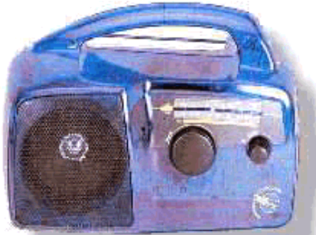
3. VHF, which stands for "Very High Frequency" and has wavelengths of around 2m. This is where you find stereo "FM" radio stations, such as "Galaxy 101" and "GWR FM". Further up the VHF band are civilian aircraft and taxis.
4. UHF stands for "Ultra High Frequency", and has wavelengths of less than a metre. It's used for Police radio communications, military aircraft radios and television transmissions.
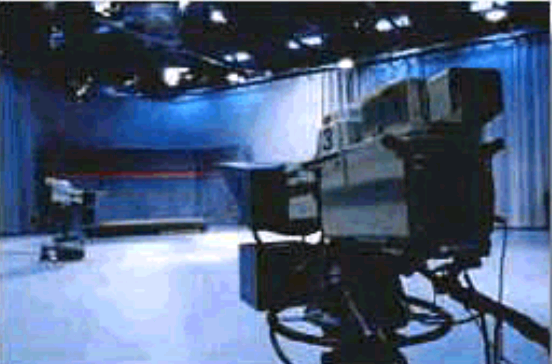
Dangers: Large doses of radio waves are believed to cause cancer, leukaemia and other disorders. Some people claim that the very low frequency field from overhead power cables near their homes has affected their health.